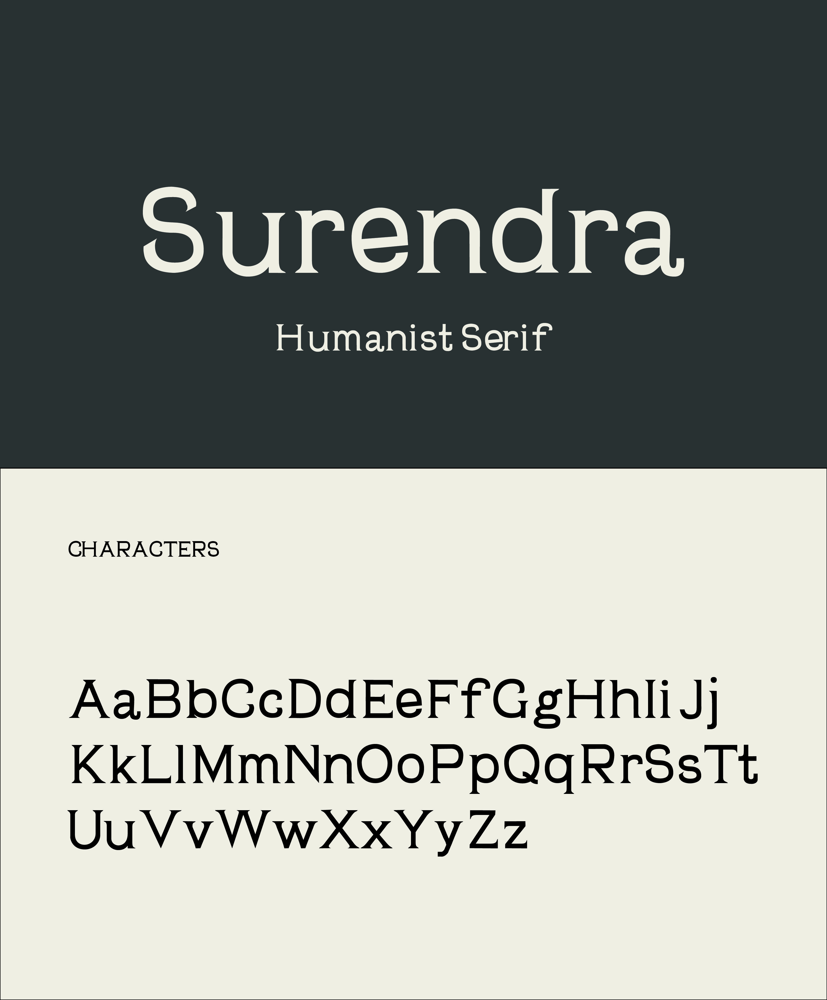
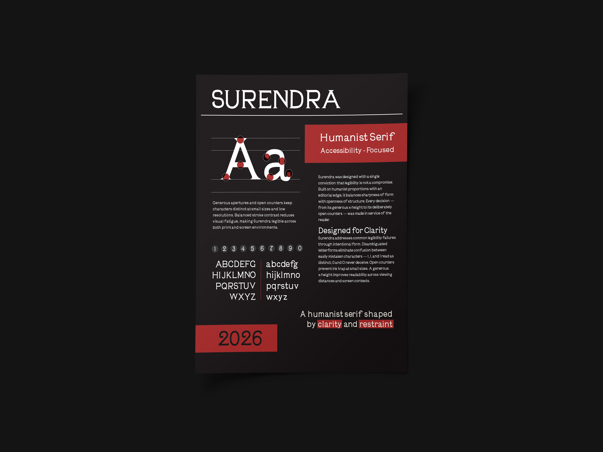

Case Study · Design · 2025
Custom Typeface + Specimen Poster
The goal of this project was to translate a historical metal or wood type specimen into a functional contemporary digital typeface. The challenge was to preserve the character and visual identity of the original reference while adapting it for modern use, with a strong focus on accessibility, readability, and consistency across a full character set.



Concept
I began by analyzing the Surendra specimen for proportion, stroke behavior, and overall rhythm. While my initial direction leaned toward blackletter-inspired sharpness, I moved into a low-contrast humanist system to better support long-form reading and practical everyday use.
Design Approach
The final structure balances open, legible forms with subtle angular serif details, allowing the typeface to keep personality without sacrificing clarity. I extended the historical reference into a complete set that includes lowercase, numerals, punctuation, and supporting marks to ensure cohesion across all glyph categories.
To improve consistency and spacing efficiency, I developed a rule-based kerning workflow that combines manual refinement with automated, shape-aware logic. This made it possible to maintain even typographic color while scaling kerning decisions across the full family.
For the specimen poster, I prioritized clarity of anatomy and usage while accounting for accessibility standards. The palette was adjusted to maintain contrast performance: although a darker red originally fit the intended mood, a lighter red was selected to improve legibility and visual accessibility.
Result
The outcome is a functional low-contrast humanist typeface that balances readability with subtle expressive detail. The system holds a consistent visual rhythm across uppercase and lowercase forms, supported by carefully tuned spacing and kerning.
The accompanying specimen poster communicates structure, use cases, and accessibility considerations in a direct and engaging format. Together, the typeface and poster demonstrate a thoughtful translation of historical reference into a contemporary, usable design system.